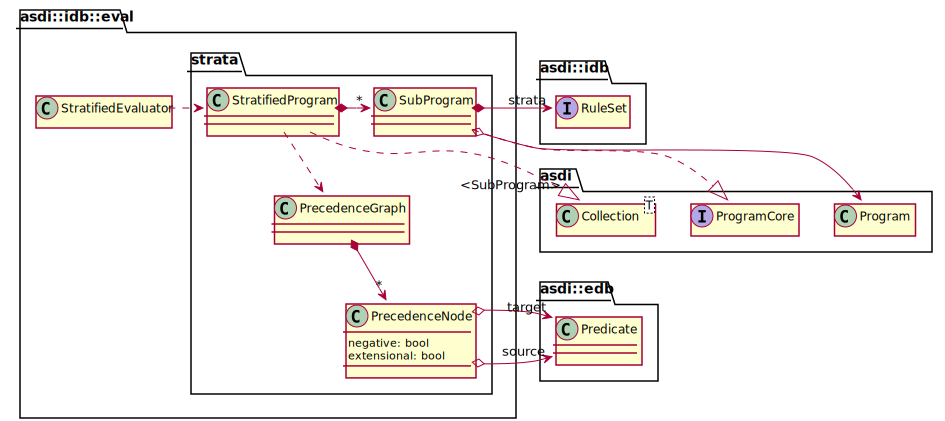

1.
Introduction
2.
Datalog
2.1.
Abstract Syntax
2.2.
Concrete Syntax
2.3.
Relational Algebra Mapping
2.4.
Language Features
3.
Model API
3.1.
Programs
3.1.1.
Features
3.1.2.
Parser
3.1.3.
Visitor
3.2.
Relations
3.2.1.
Input/Output
3.3.
Rules
3.4.
Evaluation
3.4.1.
Stratification
3.5.
Queries & Views
3.5.1.
Relational Algebra
3.6.
Error Handling
4.
Model Extension
4.1.
Writing an Evaluator
4.2.
Writing a Typesetter
5.
Appendix: Abstract Graphical View
6.
Appendix: First-Order Logic & Horn Clauses
7.
Appendix: Datalog EBNF
8.
Appendix: Relational Algebra EBNF
9.
Appendix: References
Light (default)
Rust
Coal
Navy
Ayu
Another Simplistic Datalog Implementation (in Rust)
Stratification
